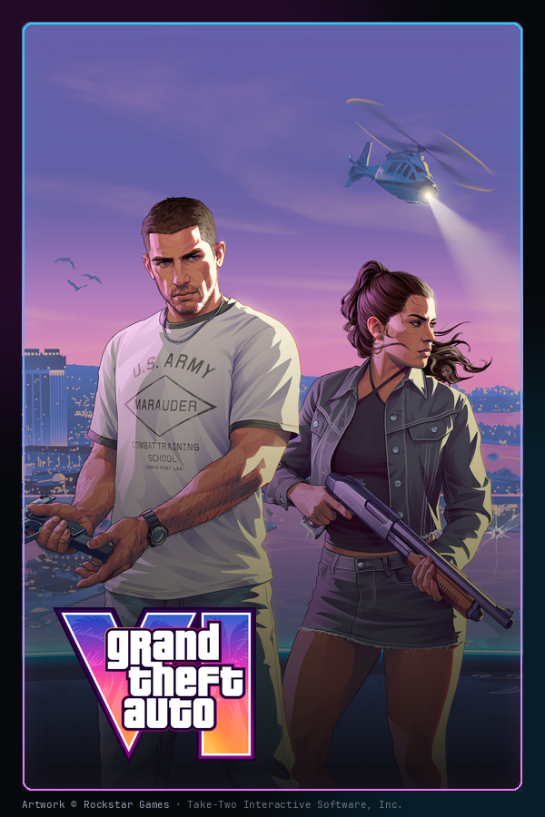

Ban PSN di 30 giorni per una foto in-game: cosa sappiamo di GTA 6

Artwork © Rockstar Games · Take-Two Interactive Software, Inc.
· Redazione BENDREX
In breve
- Un giocatore su PS5 racconta di aver ricevuto 30 giorni di sospensione dalle funzioni social di PlayStation.
- La causa è una foto scattata nel resort nudista del gioco e inviata in chat a un conoscente, non la foto in sé.
- GTA 6 bannato? No: il gioco è in vendita regolarmente, sospeso è l'account di una persona.
Un post su X, un avviso PlayStation Safety e nessuna conferma ufficiale. Il caso riguarda un singolo account PSN, non GTA 6, uscito il 19 novembre su PS5 e Xbox Series X|S.
Chi è stato sospeso e cosa ha inviato
L'utente @derrickgott007 ha scritto venerdì 20 novembre di aver appena ricevuto il provvedimento. Ha scattato una foto con Photo Studio, la modalità fotografica del gioco, nel resort nudista Tiki Touchdown, a Key Lento, e l'ha inviata a un conoscente tramite messaggistica PlayStation. La sospensione PSN riguarda quel contenuto inviato, non la nudità dentro il gioco.
Secondo quanto riporta Eurogamer, che ha visto lo screenshot, l'avviso parla di 30 giorni di blocco delle funzioni social per «contenuto pornografico o osceno». Su Xbox un altro utente ha ricevuto 48 ore per una clip caricata in automatico: meccanismo diverso, l'upload e non l'invio privato.
Cosa dice il Codice di condotta PlayStation
Il Codice di condotta PlayStation chiede di non «condividere, sollecitare, visualizzare, distribuire o memorizzare materiale osceno, pornografico o illegale». La pagina ufficiale sulle sospensioni include tra le funzioni bloccate anche «giocare online».
Cosa rischia GTA 6 (e cosa rischia chi gioca)
Il Codice non nomina i giochi e non prevede eccezioni per i contenuti in-game: è un'inferenza, non una frase del testo. GTA 6 non ha una modalità online al lancio, quindi il blocco non ha nulla da fermare e la campagna resta giocabile. Nel 2016 lo stesso meccanismo colpì uno screenshot di Watch Dogs 2.
Domande frequenti
Quanto dura la sospensione? Nel caso PS5 raccontato dall'utente sono 30 giorni. Un ban PlayStation non ha però una durata fissa: il Codice di condotta non prevede una tabella di sanzioni, la pagina Sony descrive la procedura.
Cosa resta bloccato e cosa si può giocare? Le funzioni social, compreso il gioco online. GTA 6 al lancio è single player, quindi la campagna resta accessibile; nel caso Xbox lo conferma Notebookcheck.
Sony o Rockstar hanno confermato il provvedimento? Al 22 novembre 2026 nessuna delle due società ha commentato. L'avviso lo conosciamo solo dallo screenshot citato dalle testate.
Quanti giocatori sono stati sospesi? Non c'è un numero. Sono due i casi documentati, uno su PS5 e uno su Xbox, più segnalazioni su Reddit che non abbiamo potuto leggere: non un episodio singolo, ma nemmeno un'ondata misurata.
Stato del gioco
GTA 6 è uscito il 19 novembre 2026 su PS5 e Xbox Series X|S, è regolarmente in vendita e al lancio non prevede una modalità online.
Fonti